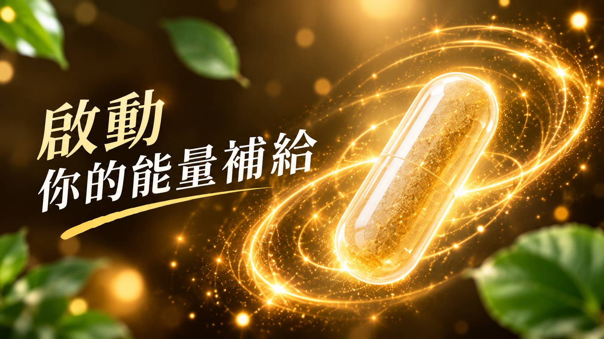
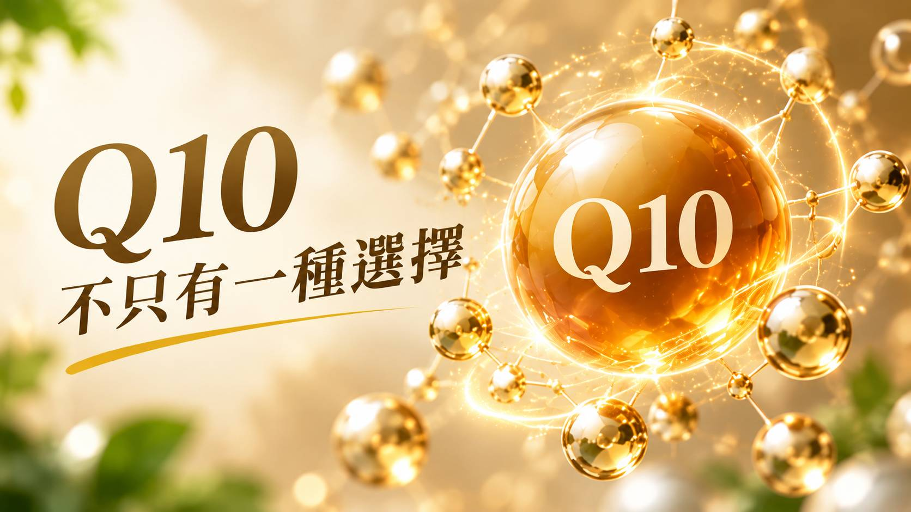
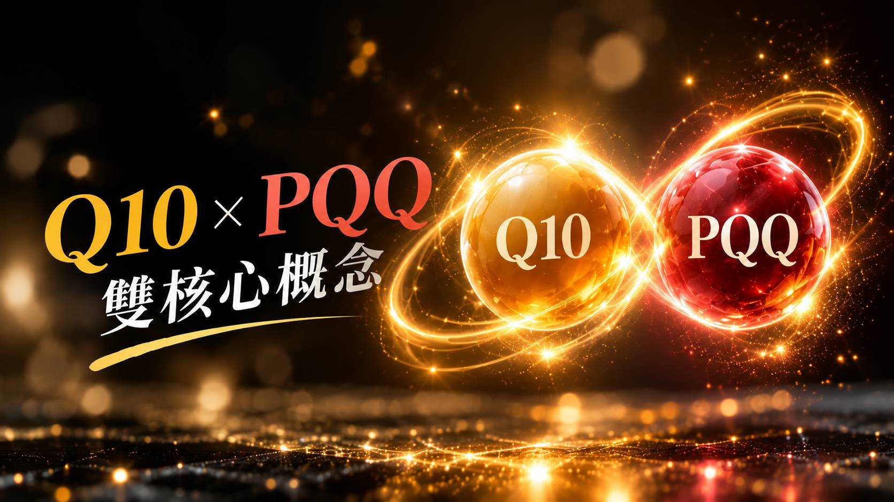
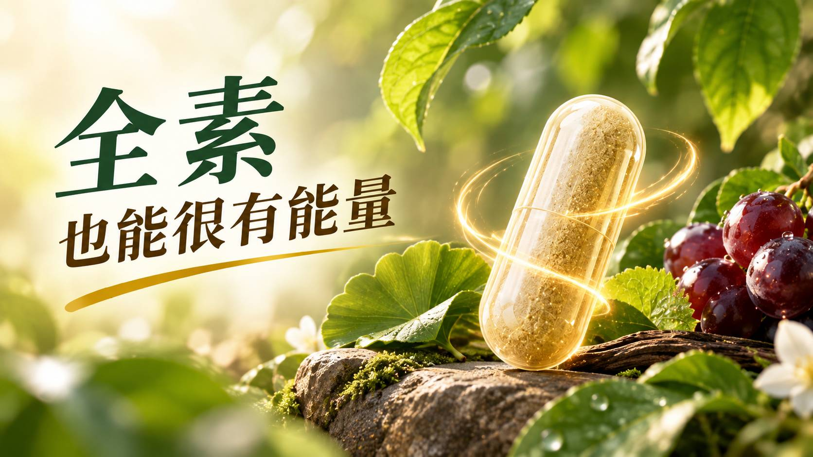
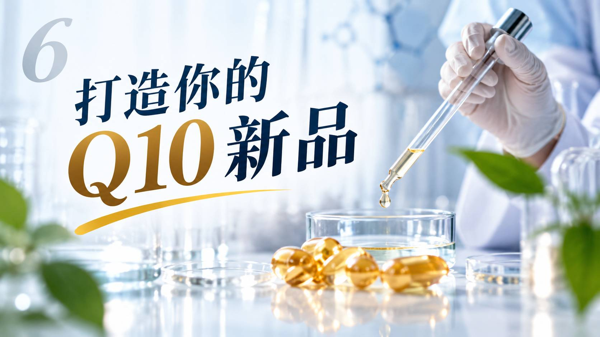
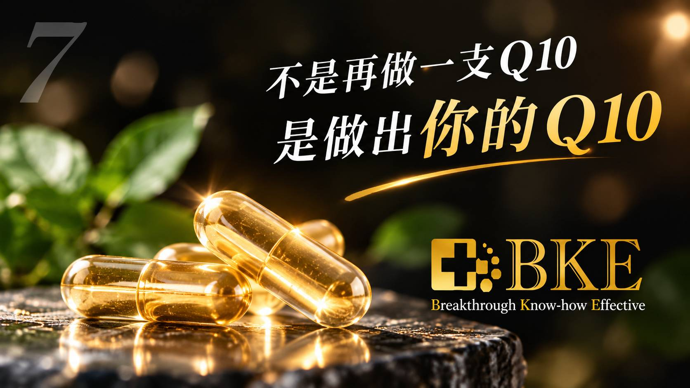

現代生活節奏快速，長時間工作、通勤、家庭與社交活動，讓「日常能量營養補給」逐漸成為保健食品市場的重要開發方向。其中，Q10（Coenzyme Q10，輔酵素Q10）是市場辨識度相當高的營養成分之一。
然而，當市場上的Q10產品愈來愈多，品牌開發新品時面對的問題已經不只是：「產品有沒有Q10？」而是進一步思考：
如何讓Q10產品具有更清楚的市場定位與配方差異？
因此，從傳統單方Q10進一步延伸至還原型Q10、PQQ、B群與植物來源素材的複方設計，正提供品牌更多產品企劃可能性。
下午3點，你還剩幾％？讓「低電量」成為日常能量補給的核心痛點。
01｜Q10是什麼？為什麼經常與「能量」一起被討論？
參與細胞能量產生與粒線體生理作用的重要營養成分
Q10全名為輔酵素Q10（Coenzyme Q10），是人體內天然存在的脂溶性物質。談到Q10時，經常會提到一個重要的細胞構造——粒線體（Mitochondria）。
粒線體參與細胞能量產生，而Q10則參與粒線體電子傳遞鏈相關生理作用，因此Q10經常成為營養科學與能量代謝研究中受到關注的營養成分。
人體本身可以合成Q10，也可以從食物中攝取。因此從保健食品產品企劃角度來看，Q10非常適合發展「日常營養補給 × 熟齡營養 × 忙碌生活型態」等產品概念。

02｜氧化型Q10與還原型Q10有什麼不同？

從氧化型到還原型，開創高階產品定位
Q10常見形式可分為氧化型Q10（Ubiquinone）以及還原型Q10（Ubiquinol）。兩者皆屬於CoQ10，但化學狀態不同。
還原型Q10是Q10的還原形式，也是目前Q10保健食品市場中常被品牌作為高階產品定位與差異化溝通的方向之一。
因此，品牌在進行Q10產品開發時，不應只比較「每顆含多少Q10」，還可以進一步評估：
原料型態 ➔ 來源規格 ➔ 配方搭配 ➔ 劑型選擇 ➔ 最終產品定位
這些因素共同決定一支Q10產品最後能不能建立真正的市場差異。
03｜Q10 × PQQ，為什麼成為值得關注的複方概念？
打造雙核心配方，創造清晰的產品記憶點
如果Q10已經是消費者熟悉的成分，那麼品牌下一步就要思考：誰可以成為Q10的「搭檔」？
PQQ全名為吡咯喹啉醌（Pyrroloquinoline Quinone），是一種受到營養與細胞研究關注的化合物。Q10與PQQ具有不同的研究背景與生理角色，因此在產品企劃上，可以形成相當清楚的「雙核心配方」故事。
這也是B2B產品開發很重要的一個思維：
不是單純把熱門原料全部放在一起，而是讓每一項原料在產品定位中都有角色。

04｜為什麼Q10複方可以搭配B群？
從核心故事延伸至日常營養補給架構
如果Q10 × PQQ是產品的「核心故事」，B群則可以讓整體日常營養補給概念更加完整。維生素B群包含多種不同維生素，例如B1、B2、B6、B12、菸鹼素、葉酸等，各自在人體正常生理機能中扮演不同角色。
因此在Q10產品開發上，加入B群的意義並不是單純「增加配方表看起來很豐富」，而是建立：
Q10核心 ＋ PQQ差異化 ＋ B群日常營養補給
再依品牌客群定位搭配植物來源素材，就能進一步延伸不同產品故事。
05｜全素Q10植物膠囊，創造另一個市場切角

劑型本身就是產品定位的一部分
除了配方之外，現在保健食品開發還有一個非常重要的趨勢：「劑型本身就是產品定位的一部分。」對素食族群而言，是否採用植物性膠囊、配方中是否含動物來源成分，都可能影響購買選擇。
因此，若從產品開發初期就朝全素配方＋植物膠囊方向規劃，就有機會讓傳統Q10產品延伸出另一個市場溝通角度。
原料 × 配方 × 劑型 × 客群 × 使用情境
從這五個面向建立差異化，而不是陷入單純的價格競爭。
06｜從「一顆Q10」走向「一個完整商品」
解決品牌新品開發的真實挑戰
對品牌端而言，真正困難的往往不是找到Q10原料，而是如何把原料變成一個具有市場定位、商品故事與量產可行性的產品。一支Q10新品正式上市之前，需要經過完整的開發流程：
市場定位 ➔ 配方設計 ➔ 原料評估 ➔ 劑型確認 ➔ 打樣測試 ➔ 規格確認 ➔ 包裝規劃 ➔ 生產量產
因此，Q10保健食品OEM／ODM開發的價值，不只是「把膠囊做出來」，而是從前端就思考：這支產品為誰而做？跟市場既有Q10有什麼不同？消費者為什麼要選它？這才是新品開發真正需要解決的問題。

🤝 Q10保健食品代工｜從配方概念走向商品化
不是再做一支Q10，是做出你的Q10。
Q10市場已經相當成熟，但成熟市場不代表沒有新品機會，而是更需要差異化。從還原型Q10的原料選擇，到PQQ、B群與植物來源素材的複方設計，再延伸至全素植物膠囊，都可以成為品牌重新切入Q10市場的產品策略。
百達醫企業提供保健食品OEM／ODM產品開發服務，從品牌需求出發，協助進行配方規劃、原料評估、產品打樣、劑型開發與量產規劃。如果你正在規劃下一支 Q10植物膠囊、Q10複方保健食品、熟齡營養補給、上班族營養補給或全素保健食品新品，歡迎與百達醫洽詢產品開發。

BKE 百達醫企業 | OEM / ODM 一站式保健食品代工